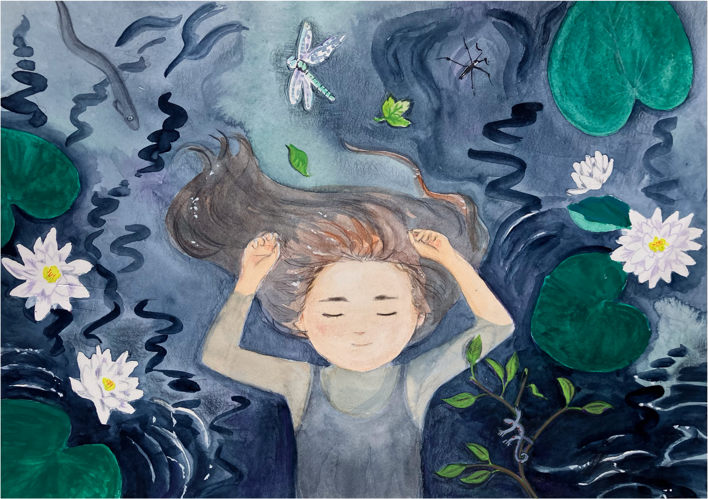
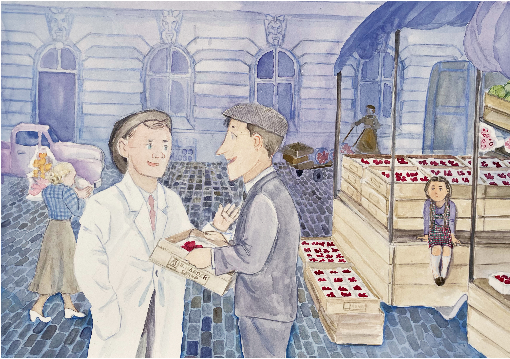

Fortællingen om min mors barndom
Min morfar var gartner, og dyrkede jordbær. Gartneriet, landskabet omkring det, og det lille samfund var rammen for min mors barndom - en barndom, der var grundlæggende anderledes end den verden, mine egne børn er vokset op i. "Jordbærkongens datter" er et con amore-projekt, der voksede ud af mit ønske om at huske: Både for at holde liv i min mors minder, men også for at mine børn skal vide, hvad de er rundet af.

Hvem er bogen til?
Bogen er skrevet og tegnet med henblik på højtlæsning for børn i alderen 4-8. Den kan både bruges hjemme, til at snakke om gamle dage, og i skolen, til at skildre, hvordan Danmark har ændret sig.
